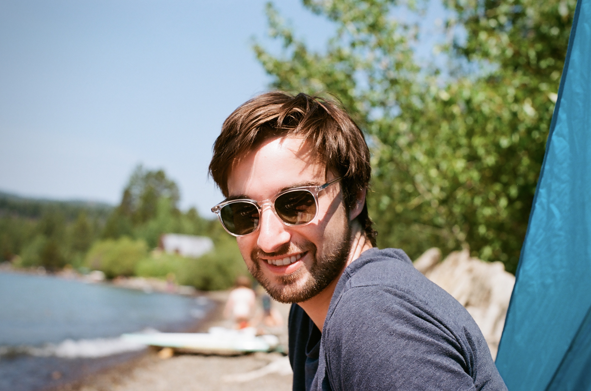

I'm Phill, a software engineer based in San Francisco, originally from Sydney, Australia. I'm passionate about building human-centered products that are carefully crafted, delightful to use, and enrich people's lives.
I thrive in collaborative environments with smart, passionate people tackling difficult problems. When I'm not writing code, you'll find me behind a camera or exploring the city.